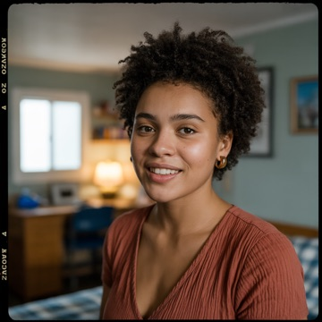

Le numérique
Construire, analyser, sécuriser, créer.
Développement & Cloud
Data & IA
Infra, réseaux & cybersécurité
Design & 3D / VFX
En partenariat avec


Une nouvelle expérience signée Studi
L'expérience étudiante de Studi.
Le même diplôme reconnu par l'État, la même plateforme nouvelle génération, le même accompagnement humain — pensés pour les étudiants. Du CAP au Bac+5, 100 % en ligne.
Partout en France
De Brest à La Réunion, partout où il y a un écran, il y a une salle de classe.
* « Plus grand campus de France » au sens du nombre d'apprenants formés à distance : 59 000 apprenants actifs en 2026. Méthodologie et source détaillées sur demande.
Nos formations · du CAP au Bac+5 · 100 % en ligne
Plus de 300 formations reconnues par l'État, construites avec des écoles de référence. Vous choisissez le métier, la façon d'apprendre et le moment de vous lancer.
Construire, analyser, sécuriser, créer.
Vendre, piloter, communiquer, entreprendre.


Compter, conseiller, recruter, accompagner.


Gagner du temps · rythme accéléré
Bac+3 en 2 ans
Titre professionnel (niveau 5) en 1 an, puis Bachelor (niveau 6) en 1 an : deux diplômes, un an de gagné. Possible aussi en 3 ans, à votre rythme.
Bac+5 en 1 an
Déjà titulaire d'un Bachelor (niveau 6) ? Obtenez votre Mastère ou MBA (niveau 7) en 12 mois, encadré et rythmé.
Vous êtes comme eux
Par choix ou par nécessité, ils sont 59 000 à avoir préféré un campus sans murs.
Pas de trajets, pas d'heures mortes. Votre temps consacré à ce qui compte : apprendre et produire.
Plateforme moderne, vidéos, cas pratiques, IA générative intégrée. L'environnement où vous travaillerez demain.
Pas de loyer étudiant à Paris, pas de vie étudiante coûteuse. Une scolarité bien plus accessible qu'en présentiel.
L'école n'a plus besoin d'être en bas de chez vous. Même programme, même diplôme, partout.
Sport de haut niveau, CDI, enfants, aidant familial… Studi Campus s'adapte à votre rythme, pas l'inverse.
Expatrié·e, nomade, alternant·e en déplacement, saisonnier·ère — vos cours vous suivent. Une connexion suffit.
Que vous avez choisi une école qui forme aux mêmes diplômes, avec les mêmes débouchés — sans vous endetter et sans quitter votre ville. Ce n'est pas un plan B : c'est un choix que de plus en plus de bacheliers font en toute lucidité.
AI-native
L'intelligence artificielle n'est pas un cours en plus : elle est intégrée dans chaque parcours, chaque outil, chaque interaction. Parce que demain, chaque métier sera augmenté par l'IA.
Un assistant pédagogique qui vous guide et s'adapte à votre niveau, en temps réel.
Rédaction augmentée, automatisations, analyse de données, prompt engineering.
Marketing augmenté, compta automatisée, RH assistée, code avec copilote.
Chaque semaine, un live animé par un praticien du secteur.
Studi Campus, c'est une grande école — des milliers d'apprenants, une communauté active, un réseau qui ouvre des portes — et c'est un accompagnement individuel. Des centaines de formateurs et de coachs en ligne, disponibles à la demande, quand vous en avez besoin.

50 séances par formation, incluses dans votre formule Premium. Sur 12 mois, c'est près d'une séance individuelle par semaine. Vous réservez en quelques clics avec le prof de votre choix. Ces séances viennent s'ajouter aux classes virtuelles collectives en direct.
Travaux dirigés et masterclass en direct, en petit groupe, en visio. Disponibles aussi en replay. Sur tous les blocs de compétences où vous avez besoin de renfort.
Vie de classe
Studi Campus, c'est une promo, des visages, des projets partagés. Vous n'êtes jamais seul·e devant votre écran.
Chaque parcours a sa promotion, son rythme, ses rendez-vous. Vous avancez avec un groupe, pas dans une file d'attente.
Dans nos centres en France ou en ligne supervisée. Un cadre sérieux, des conditions officielles.
Masterclass en direct, challenges internes, études de cas en équipe. Une pédagogie vivante et collective.
Un fil de discussion par promotion avec vos formateurs, vos coachs et vos camarades.
Pas de promesses vagues — voici exactement ce que vous verrez en vous connectant.

Annuaire géolocalisé — trouvez ceux qui habitent près de chez vous, organisez des sessions de travail, créez des liens. La carte de France de la page, en vrai.

13 matières principales, progression suivie module par module, pourcentage d'avancement en temps réel. Vous savez toujours où vous en êtes — et ce qu'il reste à faire.

Texte structuré, vidéo intégrée, quiz à chaque étape, forum de questions entre étudiants. Chaque module se termine par une auto-évaluation pour valider vos acquis.

Cours théoriques et pratiques, travaux dirigés, préparation aux examens, coaching carrière, sport & bien-être — le planning est dense. Et le plus fort : toutes les salles de classe sont ouvertes. En tant qu'étudiant Studi Campus, vous pouvez assister aux lives de toutes les promotions, de toutes les formations.

Masterclass Career Coaching sur l'entrepreneuriat — avec Alexia Courrault en live, le chat étudiant qui défile, et 11 chapitres pour s'y retrouver. Raté le direct ? Le replay est disponible dans l'heure.
Votre engagement. Notre engagement.
Votre diplôme n'est pas une ligne d'arrivée. Le marché change vite, l'IA transforme chaque métier : nous restons avec vous, bien après l'obtention.
Mises à jour de votre formation, nouveaux modules IA, langues et logiciels, 10 000+ classes virtuelles par an, communauté alumni et coach carrière. Sans vous réinscrire.
« Vous n'êtes jamais ancien élève. Vous êtes toujours étudiant·e. Pour 10 ans. »
Compétences 360 · six accélérateurs de carrière
Près de 50 modules, du débutant à l'expert.
Prise de parole, leadership, gestion du stress.
Excel, Figma, Power BI, SAP… certifications TOSA.
Anglais, espagnol, allemand. TOEIC inclus.
De l'idée au lancement, mentorat d'entrepreneurs.
CV, entretiens, accès aux offres d'emploi.
Si vous suivez le parcours avec l'assiduité attendue et n'obtenez pas votre diplôme, nous vous remboursons vos frais de scolarité. Engagement contractuel, conditions précisées au contrat.
Votre rythme
Plus de date butoir, plus d'année perdue à attendre septembre. Vous avancez à votre rythme, accompagné·e à chaque étape.
Un conseiller en formation vous accompagne à chaque étape. Pas de parcours labyrinthique, pas de dossier kafkaïen.
Si un examen intermédiaire ne se passe pas comme prévu, on rebat les cartes ensemble. Pas de couperet.
Réponse sous 24 h ouvrées, support 5j/7, un référent pédagogique dédié qui connaît votre prénom.
≈ 12 à 15 h par semaine · rythme adaptable à votre situation.
Le vrai prix d'une grande école
Un parcours complet — Graduate (Bac+2) + Bachelor (Bac+3) — soit 2 titres RNCP et 2 diplômes d'école, en rythme standard sur 3 ans (ou en 2 ans en rythme accéléré).
sur 3 ans · 1 diplôme · Bac+3
sur 3 ans · 2 diplômes · Bac+2 + Bac+3
Économie : ≈ 28 000 €
Même certification. Mêmes débouchés. Mêmes titres RNCP.
Méthodologie : chiffres tirés de moyennes constatées (frais de formation Bachelor en présentiel 2025–2026 : 6 000 à 11 000 € / an ; colocation en grande métropole : ≈ 400 € / mois ; vie courante et transports : ≈ 250 € / mois). Arrondis conservateurs. Les économies effectives varient selon la situation personnelle, la ville de résidence et le dispositif de financement (CPF, alternance, France Travail). Le parcours se valide en 3 ans en rythme standard, ou en 2 ans en rythme accéléré.
Formule Premium — incluse par défaut
Pas d'options cachées, pas de packs à la carte. Tout ce qui suit est compris, par défaut.
Pour les parents
Vous accompagnez votre enfant dans ce choix ? Trois choses comptent vraiment : un diplôme qui vaut, un suivi sérieux, et un cadre clair.
Titre RNCP reconnu par l'État, même valeur qu'en présentiel, co-signé Studi × école partenaire.
Promos constituées, classes en direct, référent dédié et bilan pédagogique mensuel partagé : vous savez où il en est.
Garantie Diplômé ou Remboursé, 14 jours de rétractation, 7 jours d'essai gratuit, service joignable 5j/7.
Ils ont choisi Studi
« J'avais raté Parcoursup. Deux ans plus tard, j'ai un Graduate en poche et je commence mon Bachelor en alternance. Une vraie deuxième chance, pas un plan B. »

« Mes potes sont en école de commerce à Paris. Moi, j'ai le même niveau de diplôme, zéro dette, et je vis toujours à Bordeaux. »
« J'habite à Cayenne. Avant Studi, une Business School, c'était prendre l'avion. Le diplôme ne mentionne pas “en ligne” — et les recruteurs ne font pas la différence. »
* Source : enquête Audirep, janvier 2025 — échantillon de 2 309 répondants ayant terminé leur formation entre janvier 2021 et juin 2023.


Bonnes questions
Oui, sans ambiguïté. Tous les diplômes Studi Campus sont des titres RNCP — la même reconnaissance d'État que les écoles en présentiel, inscrits à France Compétences. Le fait que la formation soit 100 % en ligne n'apparaît pas sur le diplôme.
50 séances individuelles de 30 minutes par formation — près d'une par semaine sur 12 mois. Vous réservez le formateur, le créneau et le sujet. Relecture d'un devoir, préparation d'examen, question sur un concept, préparation d'entretien : tout est possible.
Oui. Nous avons des apprenants en Guadeloupe, à La Réunion, en Guyane, mais aussi au Portugal, en Belgique, au Canada. Tant que vous avez une connexion, vous avez Studi Campus. Les examens peuvent, pour la plupart des cursus, être passés à distance.
Environ 12 à 15 heures par semaine en moyenne — compatible avec un emploi, un projet personnel ou une activité sportive. Vous organisez votre emploi du temps et négociez ce rythme avec votre référent pédagogique dès le premier mois.
Évaluations continues (projets, études de cas, mises en situation) et épreuves certifiantes pour valider votre titre RNCP. Les examens peuvent, pour la plupart des cursus, être passés à distance. Vos formateurs corrigent et commentent chaque rendu.
Non. Vous faites partie d'une promotion, vous retrouvez vos camarades en classes virtuelles, vous échangez sur les forums. Les formateurs sont disponibles 5j/7 et vous avez un bilan pédagogique mensuel. En ligne ne veut pas dire seul.
Oui. Elle figure noir sur blanc dans votre contrat de formation. Les conditions (assiduité, passage aux examens) sont définies avec précision et expliquées avant signature. C'est un engagement de résultat, pas une opération marketing.
Votre bilan d'orientation · 45 minutes · gratuit
Trajectoire, c'est votre bilan d'orientation individuel avec un conseiller en formation. En 45 minutes, on vérifie votre orientation professionnelle, on valide le métier qui vous correspond et la formation qui y mène. Vous repartez avec un plan clair — sans engagement.
Gratuit. Sans engagement. Sans test éliminatoire.